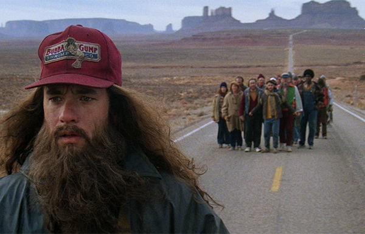

Location: Lincon Mimorial Reflecting Pool, Washington, D.C
Location: Lincon Mimorial Reflecting Pool, Washington, D.C
At this location, Forrest Gump finds his darling, Jenny. Jenny was his childhood
friend and
sweetheart, but they separated for a little bit as she became a hippie and attended an all-girls
university. Forest, during this scene, attended an anti-Vietnam war protest but is caught off
guard
with Jenny
 Location: Marshall Point Lighthouse, St. George, Maine
Location: Marshall Point Lighthouse, St. George, Maine
It is at the lighthouse here in Marshall Point where Forrest Gump decided to stop for a
break during his cross country run.
 Location: Blueridge Parkway, North Carolina
Location: Blueridge Parkway, North Carolina During the movie, Forrest starts to run across the country. Most of the mountain scenes
were
filmed in Blueridge Parkway in North Carolina. The most famous part of the run is on
Grandfather mountain where runs a curve and says, "And after that, I got more company, and then
even more people joined in" with Fleetwood Mac's You can go your own way in the background.
 Location: Chippewa Square, Savannah, GA
Location: Chippewa Square, Savannah, GA
This movie location is the most important out of all of them. During the
movie Forest
Gump, Tom
Hanks, sat down at a park bench with a box of chocolates. Gump sat next to a woman, and
he began to tell her his life story. Most of the others scenes are throwbacks to his past.
 Location: Twin Arrows Trading Post, Coconino County, Arizona
Location: Twin Arrows Trading Post, Coconino County, Arizona
During Gump's run across the country, he runs past the twin arrows trading post in
Arizona.
During this scene, Gump gets sprayed dirt on him by a trucker while running on the side of the
road. After getting sprayed on, a t-shirt salesman runs past him to get help with a design. The
man
felt bad for him and gave Gump a yellow shirt to clean the mud. "Accidentally" however, Gump
so happened to wipe his
face to make the famous smiley-face t-shirt. The salesman is grateful.
 Location: The Watergate Hotel, Washington, DC
Location: The Watergate Hotel, Washington, DC
During one of the many times that Forrest met the president, he was invited
with the ping pong team. During the award ceremony, Richard Nixon asked him where he was
staying. Nixon thought that he should be staying in a better place and got him a
room at The Watergate, the headquarters of the Democratic National Committee. At night, Gump
called the
front desk to report that they may want to send some people over to help fix a room across
the window from Gump. Many people had a flashlight, and it was keeping pour Forest
awake. The next scene shows Nixon resigning from the presidency after the Watergate Scandal.

Location: Monument Valley, Navajo County, Arizona
Monument Valley is where Forrest Gump decided to end his three-year run. The reason why he
decided to stop the run because he was both tired but also because he remembered his mom saying
that you got to put your past behind you before you can move on to which he thought that that is
the reason why he was running.
Location: Chippewa Square, Savannah, GA
This movie location is the most important out of all of them. During the
movie Forest
Gump, Tom
Hanks, sat down at a park bench with a box of chocolates. Gump sat next to a woman, and
he began to tell her his life story. Most of the others scenes are throwbacks to his past.
 Location: Yemassee Square, Yemassee, South Carolina
Location: Yemassee Square, Yemassee, South Carolina
During the movie, Gump's childhood was set in the town of Greenbow, Alabama. Although
Greenbow
is a fictional town, and the actual filming location was in Yemassee, South Carolina.
Some famous scenes are Jennies Farmhouse and Hank's Boarding home.
The image to the left is the driveways to the boarding home. Famous parts include forest running
down the road in crutches and going down the road to Greenbow, Alabama.
 Location: Hunting Island, South Carolina
Location: Hunting Island, South Carolina
Hunters Island is where most of the Vietnam scenes were filmed. During these scenes, we
get
to
see
Bubba and Lieutenant Dan. Although Bubba died in the war, Forest kept the dream alive and
started the shrimping business once he left the army.